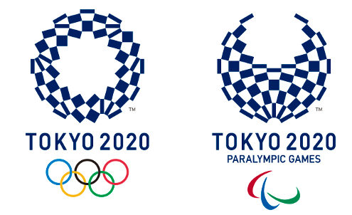

Jogos da XXXII Olimpíada, mais comumente Tóquio 2020, será um evento multiesportivo realizado durante o verão de 2021. A escolha da sede foi feita durante a 125ª Sessão do Comitê Olímpico Internacional,que aconteceu em Buenos Aires, Argentina, em 7 de setembro de 2013. Com mais de 200 países participantes e mais de 12.500 Atletas.
Ocorrerá na região metropolitana de Toquio, Japão. Onde sediou os Jogos Olímpicos de Verão de 1964. Assim, será a primeira cidade a sediar os Jogos Olímpicos duas vezes na Ásia. Além disso, esta será a quarta edição dos Jogos a serem realizados no Japão. Juntamente com os Jogos de Verão de 1964, o Japão já sediou duas vezes os Jogos Olímpicos de Inverno. A primeira vez foi Sapporo 1972 e a segunda vez foi Nagano 1998.
Os Jogos estavam marcados para o período de 24 de julho a 9 de agosto de 2020, com os primeiros eventos marcados para terem início no dia 22 de julho. Porém, em 24 de março de 2020, os jogos foram adiados para o verão de 2021, como um dos principais efeitos da Pandemia de COVID-19.Foram adiados para o verão de 2021 (esta será a primeira vez na história que um evento olímpico foi adiado).
As Olimpíadas Tóquio 2020 têm um emblema inspirado no “ichimatsu moyo”, formas quadriculadas características do período Edo (1603-1867), trazendo a predominância do azul índigo para representar o que a organização das Olimpíadas chama de “expressão da elegância e sofisticação do Japão”. É constituído de três formas retangulares, que representam diferentes países e culturas. A mensagem escolhida para a 32ª edição das Olimpíadas é “unidade na diversidade”, atribuindo ao esporte a função de celebrar as diferenças.
As Paralimpíadas são os Jogos Olímpicos voltados para atletas com deficiência física ou cognitiva, conhecidos como paratletas. A edição de Tóquio dos Jogos Paralímpicos seria realizada de 24 de agosto a 5 de setembro de 2021, mas também foi adiada para 2021. A Paraolimpíada de Tóquio contará com 22 modalidades esportivas.
Os Jogos Paralímpicos de Tóquio contarão com dois novos esportes em suas modalidades de competição: Badminton e Taekwondo.